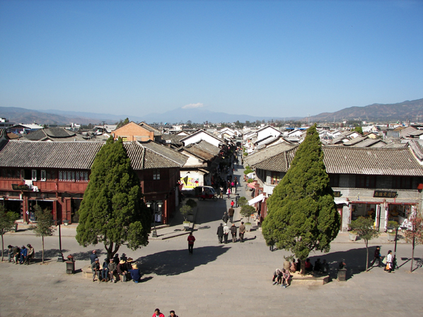

蒙化二景
除上述两座阁建筑外，城内还保存着文庙、关帝庙、财神庙、文华书院、太阳宫、冷泉庵等明清建筑。这些工艺精湛、结构严谨、雕梁画栋的古建筑，再现了昔日巍山古城的繁华和高超的建筑艺术。 巍山古城还是一个景色秀丽的地方，“瓜江垒玉”和“一江抱孤城”是历史上有名的蒙化十六胜景之二景。 巍山古城西的西子河是红河的源头，古称阳瓜江。登上巍宝山山巅，眺望古城，弯弯曲曲的阳瓜江缓缓南流，犹如一条“瓜藤”，两岸布局有致的村落像“瓜藤”上的“瓜果”，构成了一幅景致优美的“瓜图”。阳瓜江两岸古时便有种植冬瓜、南瓜等瓜类植物的传统。成熟时节，遍地是瓜，在阳光的照射下，似翡翠闪烁，被誉为“瓜江垒玉”的景色。 “一江抱孤城”是指流经巍山古城西的阳瓜江到古城这里时刚好绕了一个弯，像一只大手的臂弯，古老的巍山县城被阳瓜江围抱在臂弯内，十分形象。 巍山有汉、彝、回、白、苗、傈傈等6种世居民族，其民俗各异，风情浓郁，尤其以“彝族打歌”和伊斯兰文化最具特色。